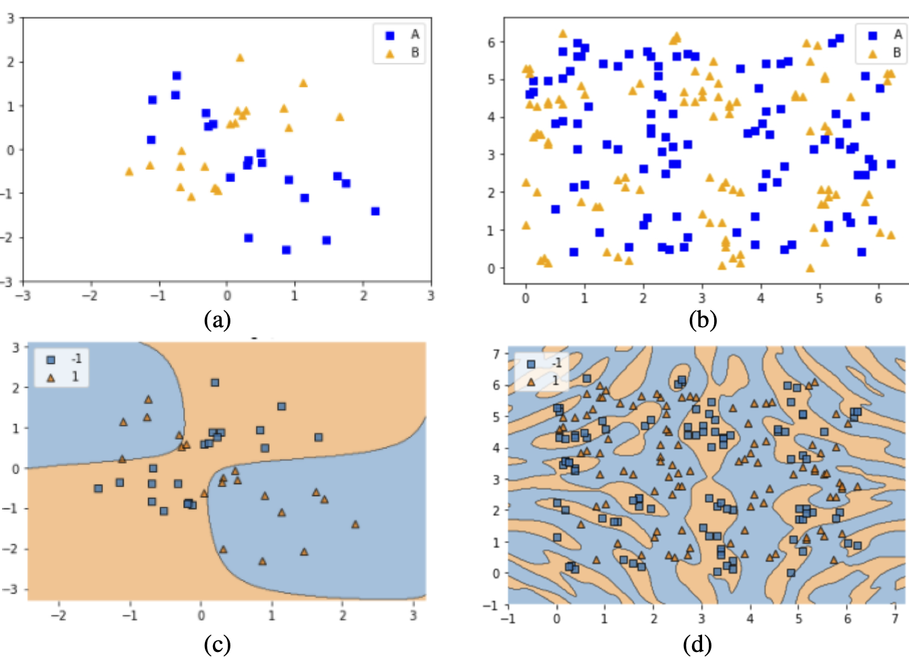
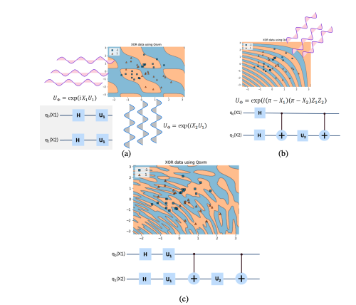

Background: Quantum Machine Learning#
This section provides foundational information about quantum machine learning concepts and techniques used in QBioCode. This material can be used for seminars, presentations, and educational purposes.
Quantum Computing in Biology and Healthcare#
Quantum computing is emerging as a transformative technology for biological and healthcare applications:
Key Applications
Protein Structure Prediction: A perspective on protein structure prediction using quantum computers - J. Chem. Theory Comput. (2025).
Biomarker Discovery: How quantum computing can enhance biomarker discovery - Patterns (2025).
Single-Cell Omics: Advancing single-cell omics and cell-based therapeutics with quantum computing - Nature Reviews Molecular Cell Biology (2026).
These applications demonstrate the potential of quantum computing to address computationally challenging problems in structural biology, precision medicine, and cellular therapeutics, domains where QBioCode’s quantum machine learning tools can provide valuable insights.
Quantum Algorithms for Spatiotemporal Single-Cell Analysis#
The landscape of quantum machine learning algorithms for biological applications spans six broad computational tasks, each with classical methods that have quantum analogs. The figure below illustrates how these algorithms intersect to enable comprehensive spatiotemporal single-cell analysis:

Quantum algorithms landscape for spatiotemporal single-cell analysis. Six broad computational tasks (colored lines) intersect with various applicable algorithms (circles), leading towards spatiotemporal single-cell analysis. Classical methods with quantum analogs are denoted with a preceding (Q). Algorithms include: QCNN (quantum convolutional neural network), QCumulant (quantum cumulant calculation), QGAN (quantum generative adversarial network), QGNN (quantum graph neural networks), QMCMC (quantum Monte Carlo Markov chain), QNN (quantum neural network), QODE (quantum ordinary differential equations), QTDA (quantum topological data analysis), QVAE (quantum variational autoencoders), and VQC (variational quantum circuit). Some methods require fault-tolerant quantum devices (FTQDs). Source: Nature Reviews Molecular Cell Biology (2026).#
Note
QBioCode Implementation Status: QBioCode currently implements several of these quantum algorithms including VQC, QNN, and quantum kernel methods (QSVC, PQK). As quantum hardware continues to advance, additional algorithms from this landscape will become practical for real-world biological applications.
Introduction to Quantum Computing#
Quantum computing leverages quantum mechanical phenomena such as superposition and entanglement to process information in fundamentally different ways than classical computers.
Key Concepts#
Qubits: The basic unit of quantum information
Superposition: A qubit can exist in multiple states simultaneously
Entanglement: Quantum states can be correlated in ways impossible classically
Quantum Gates: Operations that manipulate qubits
📺 Video Learning Resources
For comprehensive video tutorials on these quantum computing fundamentals, see the Qiskit YouTube Playlist: Understanding Quantum Information and Computation. This series provides excellent visual explanations of qubits, superposition, entanglement, and quantum gates.
Quantum Machine Learning#
Quantum Machine Learning (QML) combines quantum computing with machine learning algorithms to potentially achieve computational advantages for certain tasks.
🔍 Taxonomy of Machine Learning and Quantum Computing#
Understanding the relationship between machine learning and quantum computing requires considering both the type of data (classical or quantum) and the processing device (classical or quantum computer).
Reference
Maria Schuld, Francesco Petruccione: “Supervised Learning with Quantum Computers”, Page 6
Classical Data → Classical Processing
Machine Learning based on methods borrowed from Quantum Information research, or “Quantum-Inspired” algorithms.
Examples: Tensor networks, quantum-inspired optimization
Classical Data → Quantum Processing
Synonym for QML. Data come from classical systems like text, images, time series, macro-economic variables.
Key Challenge: Requires Quantum-Classical interface
This is the primary focus of QBioCode
Quantum Data → Classical Processing
How can Machine Learning help with Quantum Computing?
Examples: Quantum error correction, quantum state tomography
Quantum Data → Quantum Processing
Closely related to CQ. Data can be measured from quantum systems or datasets can be Quantum States.
Examples: Quantum state classification, quantum sensing
Important
CQ (Classical-Quantum) is the most relevant category for healthcare and life sciences applications, where classical biological data is processed using quantum algorithms to potentially achieve computational advantages.
🔬 Quantum Machine Learning in a Nutshell#
Both classical and quantum machine learning start with the same input (Dataset D) and produce the same output (Prediction ŷ), but the quantum approach introduces two critical intermediate steps:
Workflow:
[Dataset D] → ML Algorithm → [Prediction ŷ]
Traditional approach: data flows directly through classical algorithms.
Workflow:
[Dataset D] → 🔵 Encoding → Quantum Circuit → 🔵 Measurement → [Prediction ŷ]
Two Critical Quantum Steps:
🔵 Encoding: Transforms classical data into quantum states (e.g., qubit rotations, amplitude encoding)
Maps classical features to quantum parameters
Enables quantum superposition and entanglement
Foundation for quantum advantage
🔵 Measurement: Extracts classical information from quantum states
Collapses quantum superposition to classical bits
Produces probabilistic outcomes
Bridges quantum and classical worlds
Important
Key Insight: The quantum workflow shares the same endpoints (classical data in, predictions out) but leverages quantum phenomena in between. The Encoding and Measurement steps are what make quantum machine learning fundamentally different, and potentially more powerful, than classical approaches.
Key References
M. Schuld, F. Petruccione: “Supervised Learning with Quantum Computers”
M. Schuld, N. Killoran: arXiv 1803.07128
🔑 Data Encoding: The Foundation of QML#
Important
Data encoding is one of the most important parts of QML. Frameworks, software, and hardware that address the interface between classical memory and quantum devices are key for runtime evaluations.
Encoding Strategies#
Encode data in superposition states
Minimize the number of qubits required
Optimal for limited qubit resources
Encode information in quantum state amplitudes
Leverage quantum parallelism
Efficient for high-dimensional data
Encoding Methods: Complexity Analysis#
Different encoding methods have different resource requirements in terms of qubits and state preparation time.
Notation:
N = number of features
n = number of qubits
Encoding Method |
# Qubits |
State Prep Runtime |
Description |
|---|---|---|---|
Basis |
nN |
O(N) |
Direct mapping of classical bits to quantum basis states |
Amplitude |
log(N) |
O(N) to O(log N) |
Encode data in quantum state amplitudes (most qubit-efficient) |
Angle |
N |
O(N) |
Encode data in rotation angles of quantum gates |
Arbitrary |
n |
O(N) |
General feature map encoding to high-dimensional spaces |
Note
Key Insight: Amplitude encoding is the most qubit-efficient method, requiring only log(N) qubits for N features, but may require more complex state preparation circuits. The choice of encoding method depends on the specific application and available quantum hardware.
🗺️ Quantum Feature Maps#
Quantum feature maps are fundamental to quantum machine learning, as they define how classical data is encoded into quantum states. The structure of the feature map directly impacts the expressiveness and performance of quantum algorithms, enabling quantum systems to exploit higher-dimensional Hilbert spaces efficiently and create decision boundaries that are difficult for classical kernel functions to replicate.
Why Quantum Feature Maps Matter#
The power of quantum feature maps lies in their ability to transform classical data through quantum operations, creating complex decision boundaries adapted to the data’s inherent structure. By controlling rotation factors (α) and Pauli gate combinations, quantum kernels can:
Adapt to data complexity: Simple boundaries for straightforward patterns, complex boundaries for intricate data
Capture feature interactions: Through entangling operations that create correlations in the quantum state
Avoid overfitting: By tuning the expressiveness to match the problem’s inherent complexity
{kind=link}

Adaptive Decision Boundaries with Quantum Feature Maps: Demonstration of quantum SVM flexibility across different data patterns. (a) XOR-patterned data requiring simple separating boundaries. (b) Complex data with intricate class distributions. (c) QSVM decision boundary effectively separating XOR patterns. (d) QSVM decision boundary adapting to complex data structure. The same quantum kernel framework can handle both simple and complex classification tasks by adjusting feature map parameters. Source: Park et al. (2020), arXiv:2012.07725#
Mathematical Foundation#
The quantum feature map is constructed using parameterized unitary transformations:
where:
$\alpha_j$ : Rotation factors controlling phase rotation based on feature values
$\sigma_j$ : Pauli operators ($X, Y, Z$) defining the rotation axes
$\varphi_s(\mathbf{x})$ : Scaled classical features (typically mapped to $[0, 2\pi]$)
$n$ : Number of features
This formulation enables:
Ising-like interactions (ZZ, YY gates) for feature coupling:
Independent rotations (single Z, Y gates) for separable features:
Flexible hyperplanes adapted to data patterns through hyperparameter optimization of $\alpha_j$ and gate combinations.
Feature Map Architectures#
Different feature map designs offer varying levels of complexity and entanglement. Understanding these architectures helps in selecting the appropriate approach for specific problems:
{kind=link}

Quantum Feature Map Design Strategies: Three approaches to constructing quantum feature maps for data encoding. (a) Independent single-qubit rotations applied to each feature, creating separable quantum states. (b) Entangling operations between pairs of qubits, introducing quantum correlations. (c) Hybrid approach combining both independent rotations and entangling gates for enhanced expressiveness. Source: Park et al. (2020), arXiv:2012.07725#
Single-qubit rotations applied independently to each feature, creating straightforward decision surfaces.
Characteristics:
Simple circuit structure
No entanglement
Limited expressiveness
Fast execution
Best for: XOR patterns, linearly separable data, baseline comparisons
Two-qubit gates creating quantum correlations between features, capturing feature dependencies.
Characteristics:
Introduces entanglement
Captures feature interactions
Higher expressiveness
More complex circuits
Best for: Data with feature dependencies and correlations
Combination of independent and entangling operations, creating higher-order decision boundaries.
Characteristics:
Balanced complexity
Flexible design
Tunable expressiveness
Practical for current hardware
Best for: Real-world biological data, most QML applications
Choosing a Feature Map#
The choice of feature map depends on several factors:
Problem Structure: Does the problem benefit from capturing feature interactions?
Hardware Constraints: Available qubits, gate fidelity, and circuit depth limits
Data Characteristics: Dimensionality, correlations, and noise levels
Computational Resources: Classical preprocessing and quantum execution time
Important
Key Insight: The same quantum kernel framework can be tuned from simple to complex by adjusting rotation factors and Pauli gate combinations. This flexibility allows quantum algorithms to match the complexity of the data without creating unnecessarily complex decision boundaries.
Note
In QBioCode, feature maps can be configured through the encoding parameters in quantum model functions (e.g., compute_qsvc, compute_pqk), allowing users to experiment with different architectures for their specific applications.
Reference
Park, J.-E., Quanz, B., Wood, S., Higgins, H., & Harishankar, R. (2020). Practical application improvement to Quantum SVM: theory to practice. arXiv:2012.07725. https://arxiv.org/abs/2012.07725
💡 Why Quantum Machine Learning?#
Potential speedups for specific tasks through quantum parallelism and interference
Reduced training data requirements through quantum generalization properties
Natural representation of complex data through quantum encoding in Hilbert spaces
New approaches to classification and optimization leveraging quantum properties
Understanding Quantum Advantage#
Quantum advantage in machine learning can manifest in multiple ways, each with distinct theoretical foundations and practical implications. Importantly, quantum advantage is not solely about computational speed, it encompasses accuracy improvements, sample efficiency, and empirical verifiability.
Beyond Speed: A Multifaceted Advantage
Recent work has demonstrated that quantum advantage should be evaluated across multiple dimensions:
Computational Speed: Reducing time complexity through quantum parallelism and interference
Prediction Accuracy: Achieving higher classification or regression accuracy than classical methods
Sample Efficiency: Learning from fewer training examples while maintaining performance
Empirical Verifiability: Demonstrating measurable improvements on real-world problems
Key Reference: Redefining Quantum Advantage
Huang, H.-Y. et al. (2024). “Quantum advantage in learning from experiments.” arXiv:2506.20658. https://arxiv.org/abs/2506.20658
This work emphasizes that quantum advantage should be empirically verifiable and not limited to computational speedup. Quantum algorithms can provide advantages through improved accuracy and learning efficiency, even when classical algorithms exist with similar time complexity.
Computational Complexity Advantage
Traditional quantum advantage focuses on computational speedup, reducing the time required to solve a problem. Quantum algorithms can potentially offer exponential or polynomial speedups for specific tasks through quantum parallelism, superposition, and interference effects.
Additional References
Optimization Challenges: Abbas, A. et al. (2024). “Challenges and opportunities in quantum optimization.” Nature Reviews Physics, 6, 718–735.
QML Landscape: Cerezo, M. et al. (2022). “Challenges and opportunities in quantum machine learning.” Nature Computational Science, 2, 567–576.
Accuracy Advantage
Quantum machine learning models can achieve higher prediction accuracy than classical counterparts on certain problems, even when computational time is comparable. This accuracy advantage stems from:
Richer Feature Spaces: Quantum feature maps can capture complex nonlinear relationships that are difficult for classical kernels
Quantum Interference: Constructive and destructive interference can enhance signal-to-noise ratios
Entanglement: Correlations between quantum states can encode higher-order feature interactions
Important
Empirical Verification is Essential
Quantum advantage claims must be empirically verifiable on real-world problems, not just theoretical constructs. This requires:
Benchmarking against state-of-the-art classical methods
Testing on diverse datasets with varying characteristics
Accounting for hardware noise and error rates
Demonstrating reproducibility across multiple runs
Sample Complexity Advantage
Beyond computational speed, quantum learning theory introduces another dimension of advantage: sample complexity, the number of training examples needed to achieve a target accuracy. This is particularly relevant within the Probably Approximately Correct (PAC) learning framework.
In this context, quantum advantage emerges when a quantum learning algorithm requires fewer training samples than any classical algorithm to reach the same prediction accuracy. Specifically, if the upper bound on sample complexity for a quantum learner is lower than the lower bound for all classical learners, a provable quantum advantage exists.
Important
Sample Efficiency vs. Computational Efficiency
While low sample complexity is crucial for data-limited scenarios, it doesn’t automatically guarantee practical efficiency. The computational cost of identifying useful training examples or processing them may still be substantial. True practical advantage requires considering both sample and computational complexity together.
Generalization from Few Training Data
Recent theoretical and empirical work has demonstrated that quantum machine learning models can exhibit superior generalization properties, learning effectively from remarkably small training sets. This capability is particularly valuable in domains where:
Data acquisition is expensive (e.g., quantum experiments, medical imaging)
Labeling requires expert knowledge (e.g., drug discovery, materials science)
Privacy constraints limit data availability (e.g., healthcare, finance)
Key Reference
Caro, M. C. et al. (2022). “Generalization in quantum machine learning from few training data.” Nature Communications, 13, 4919.
Theoretical Framework: PAC Learning
The PAC learning framework provides a rigorous foundation for analyzing sample complexity:
Goal: Learn a hypothesis that is “probably” (with high probability) “approximately correct” (within error threshold $\epsilon$)
Sample Complexity: Number of training examples $m$ needed to achieve error $\leq \epsilon$ with probability $\geq 1-\delta$
Quantum Advantage: When quantum algorithms achieve this with $m_{\text{quantum}} \ll m_{\text{classical}}$
Key Reference
Arunachalam, S. & de Wolf, R. (2017). “Guest column: A survey of quantum learning theory.” ACM SIGACT News, 48(2), 41-67.
Practical Considerations
While theoretical advantages are promising, practical quantum advantage depends on:
Hardware Quality: Gate fidelity, coherence times, and qubit connectivity
Problem Structure: Not all problems benefit equally from quantum approaches
Data Characteristics: Quantum advantage may be problem-specific
Hybrid Approaches: Combining quantum and classical methods often yields best results
Note
Current Status: With current quantum hardware, demonstrating practical quantum advantage for real-world machine learning tasks remains an active area of research. QBioCode provides tools to explore these possibilities empirically across both quantum simulators and available quantum devices.
QML Algorithms in QBioCode
QBioCode provides implementations of state-of-the-art quantum machine learning algorithms alongside classical baselines for comprehensive benchmarking. These quantum methods address key challenges in classical approaches, such as computational expense, poor out-of-distribution generalization, and sensitivity to noisy data, by leveraging quantum properties like superposition and entanglement.
Quantum Advantage in Biological Applications
Quantum machine learning methods show particular promise for biological data analysis, including cell classification and segmentation, trajectory inference, perturbation modeling, and multi-omics integration. These applications benefit from quantum algorithms’ ability to handle high-dimensional data and learn from limited samples.
For detailed API documentation, see the API Overview.
Quantum Kernels
Quantum kernels compute similarity measures between data points in high-dimensional Hilbert spaces, offering advantages over classical kernels for complex pattern recognition.
Implementations:
Projected Quantum Kernel (PQK) -
compute_pqk: Projects data into quantum feature space for enhanced separability in classification tasks.Quantum Support Vector Classifier (QSVC) -
compute_qsvc: Quantum analog of SVM using quantum kernels for binary and multi-class classification.
Note
Biological Applications: Quantum kernels have shown promise in cell classification, CpG prediction, and T cell receptor classification, where they can capture complex nonlinear relationships in biological data.
Variational Quantum Algorithms
Variational quantum algorithms use parameterized quantum circuits optimized through hybrid quantum-classical loops, analogous to neural networks but leveraging quantum computational advantages.
Implementations:
Variational Quantum Classifier (VQC) -
compute_vqc: Trainable quantum circuit for classification with gradient-based optimization.Quantum Neural Networks (QNN) -
compute_qnn: Quantum analog of neural networks with parameterized quantum gates as trainable layers.
Note
Biological Applications: Quantum variational autoencoders have been applied to trajectory inference, perturbation modeling, and multi-omics integration, addressing challenges like learning uninformative latent representations and sensitivity to noisy data that affect classical variational autoencoders.
Classical Baselines
QBioCode provides classical machine learning models for rigorous benchmarking and comparison:
Support Vector Classifier (SVC) -
compute_svc: Classical kernel-based classifier for comparison with quantum kernels.Random Forest (RF) -
compute_rf: Ensemble method combining multiple decision trees for robust predictions.Logistic Regression (LR) -
compute_lr: Linear model providing interpretable baseline for binary classification.Decision Tree (DT) -
compute_dt: Tree-based model offering interpretable decision rules.Naive Bayes (NB) -
compute_nb: Probabilistic classifier based on Bayes’ theorem with feature independence assumption.Multi-layer Perceptron (MLP) -
compute_mlp: Classical neural network for comparison with quantum neural networks.
Important
Benchmarking Strategy: Comparing quantum algorithms against these classical baselines is essential for demonstrating quantum advantage. QBioCode’s unified interface enables fair comparisons across all methods using identical data preprocessing and evaluation metrics.
See also
For complete API documentation of all models, see the API Overview.
Getting Started with QML
Prerequisites
Quantum Computing Basics: Understanding of qubits, gates, and circuits
Machine Learning Fundamentals: Classification, regression, and optimization
Linear Algebra: Vector spaces, matrices, and eigenvalues
Python Programming: Familiarity with NumPy, scikit-learn, and Qiskit
Learning Resources
Quantum vs Classical Machine Learning
When to Use Quantum ML
Potential Advantages:
High-dimensional data with complex patterns
Problems with quantum structure
Kernel-based methods with complex kernel computations
Optimization landscapes with many local minima
Current Limitations:
Limited qubit count and connectivity
Noise and decoherence in current quantum hardware
Circuit depth constraints
Classical simulation overhead
Benchmarking Approach
QBioCode provides tools to systematically compare quantum and classical approaches:
QProfiler: Automated benchmarking across multiple models
Standardized Metrics: Accuracy, F1-score, AUC
Dataset Complexity Analysis: Understanding when quantum advantage emerges
Fair Comparison: Same data preprocessing and evaluation protocols
Future Directions
Near-Term Goals
Hybrid quantum-classical algorithms
Domain-specific quantum algorithms for HCLS
Long-Term Vision
Integration with classical ML pipelines
Quantum-enhanced AI for healthcare
References and Further Reading
Key Papers
Havlíček et al. (2019). “Supervised learning with quantum-enhanced feature spaces” - Nature
Schuld & Killoran (2019). “Quantum machine learning in feature Hilbert spaces” - Physical Review Letters
Biamonte et al. (2017). “Quantum machine learning” - Nature
QML Libraries
Video Resources
📺 Qiskit YouTube Channel
For comprehensive video tutorials, lectures, and demonstrations on quantum computing and quantum machine learning, visit the official Qiskit YouTube Channel. The channel features:
Tutorial Series: Step-by-step guides on quantum algorithms and programming
Quantum Machine Learning: Dedicated content on QML concepts and implementations
Live Coding Sessions: Hands-on demonstrations with Qiskit
Research Talks: Latest developments in quantum computing
Community Events: Qiskit Global Summer School and hackathons
Recommended Playlist: Understanding Quantum Information and Computation - Essential foundation for quantum computing concepts used throughout QBioCode.
See also
This background material provides context for using QBioCode in quantum machine learning research and applications. For hands-on tutorials, see the Tutorials section.